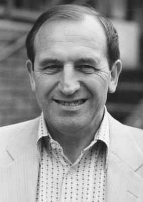

#1822 Oliver!
Auszeichnungen: 1 Oscars gewonnen für 6 Oscars nominiert 2 GoldenGlobes gewonnen


 IMDB-Wertung: 7.5 / 10
IMDB-Wertung: 7.5 / 10  Metascore: 0
Metascore: 0 
Oliver, das Findelkind aus dem Arbeitshaus, ist ausgerissen. Karge Kost und ständige Prügel haben ihm Beine gemacht. Nun sucht Oliver sein Glück im Hexenkessel London, und landet prompt in den Fängen der Unterwelt. Mr. Fagin, Boss einer Bande jugendlicher Taschendiebe und Trickbetrüger, nimmt den Waisenknaben unter seine Fittiche. Und Oliver lernt das Gaunerhandwerk von Grund auf.
Jahr: 1968
Dauer: 153 Minuten
FSK: 12
Land: England Studio: Sony Pictures Home EntertainmentTonspuren: DD5.1 - ,
Untertitel: Deutsch,
Auflösung: 1080p (1920x816) Größe: 11161 MB
Genre: Drama, Familie, Musical
Regisseur: Carol Reed
Drehbuch: Lionel Bart, Vernon Harris, Charles Dickens
Soundtrack: Lionel Bart, Johnny Green
Darsteller:
- Ron Moody als Fagin
- Shani Wallis als Nancy
 Oliver Reed als Bill Sikes
Oliver Reed als Bill Sikes- Mark Lester als Oliver
- Jack Wild als The Artful Dodger
 Hugh Griffith als Magistrate
Hugh Griffith als Magistrate-  Leonard Rossiter als Sowerberry
 Kenneth Cranham als Noah Claypole
Kenneth Cranham als Noah Claypole- Sheila White als Bet
 Norman Mitchell als Arresting Policeman
Norman Mitchell als Arresting Policeman- Harry Secombe als Bumble
- Joseph O'Conor als Mr. Brownlow
- Peggy Mount als Mrs. Bumble
- Hylda Baker als Mrs. Sowerberry
- Megs Jenkins als Mrs. Bedwin
- Wensley Pithey als Dr. Grimwig
- James Hayter als Mr. Jessop
- Elizabeth Knight als Charlotte
- Fred Emney als Chairman - Workhouse
- Edwin Finn als Pauper - Workhouse
- Roy Evans als Pauper - Workhouse
- Robert Bartlett als Fagin's Boy
- Graham Buttrose als Fagin's Boy
- Jeffrey Chandler als Fagin's Boy
- Kirk Clugston als Fagin's Boy
- Dempsey Cook als Fagin's Boy
- Christopher Duff als Fagin's Boy
- Nigel Grice als Fagin's Boy
- Ronnie Johnson als Fagin's Boy
- Nigel Kingsley als Fagin's Boy
- Robert Langley als Fagin's Boy
- Brian Lloyd als Fagin's Boy
- Peter Lock als Fagin's Boy
- Clive Moss als Fagin's Boy
- Ian Ramsey als Fagin's Boy
- Peter Renn als Fagin's Boy
 Billy Smith als Fagin's Boy
Billy Smith als Fagin's Boy- Kim Smith als Fagin's Boy
- Freddie Stead als Fagin's Boy
- Raymond Ward als Fagin's Boy
- John Watters als Fagin's Boy
- Frank Crawshaw als Workhouse Governor , uncredited
 Harry Fielder als Smart Gent , uncredited
Harry Fielder als Smart Gent , uncredited- Jack Haig als (uncredited
- Peter Hoare als Clerk of Court , uncredited
- Anthony Kemp als (uncredited
- Arnold Locke als Workhouse Governor , uncredited
- Jim Machin als Child , uncredited
- Ruben Martin als Strongman , uncredited
- Elaine Paige als Urchin , uncredited
Datei: X:\1968\Oliver! (1968, FSK12, 1920x816).mkv seit 26.08.2015
Festplatte: HD 1900-1970
 Es gibt insgesamt 25 Filme in der Gruppe '1968'
Es gibt insgesamt 25 Filme in der Gruppe '1968'